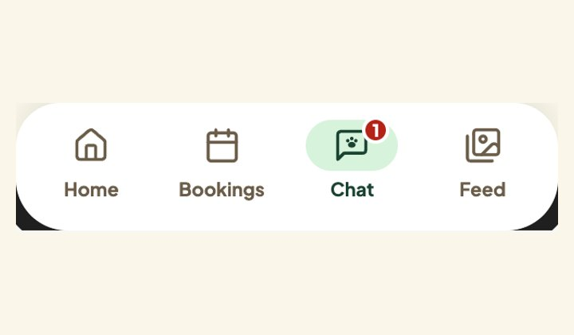
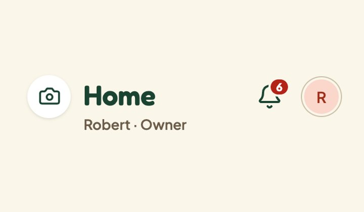
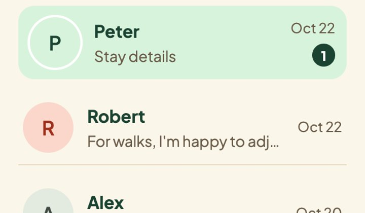
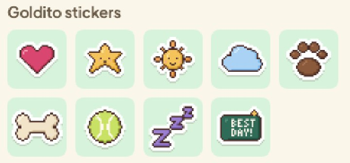
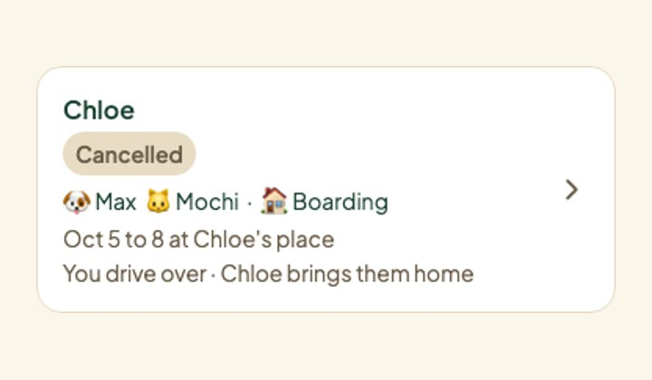

Worked on, what's left작업한 일, 남은 일
Covers Oct 2310/23
Worked on작업한 것





Design tickets in today's slot오늘 슬롯의 디자인 티켓
All open track:design tickets, checked against GitHub and the code on main today. Same list on the Project page and in Figma (Tickets page).열린 track:design 티켓 전부, 오늘 GitHub와 main 코드로 확인. 프로젝트 페이지와 피그마 (Tickets 페이지)에 같은 목록.
Done today오늘 완료
In the slot today오늘 할 일

Ready to close (done)닫을 준비 (완료)
- #112 · Scenario screens in FigmaFigma의 시나리오 화면: The plugin builds every Expressive screen of the stay, stages 1 to 5, from the Expressive components, and flags what changed on each run.플러그인이 스테이 1~5단계의 Expressive 화면을 모두 컴포넌트로 만들고 실행마다 바뀐 것을 표시. Close with a link to the Screens page.Screens 페이지 링크와 함께 닫기. #112
- #113 · Sample photo set샘플 사진 세트: Meals, walks, naps, handoff shots, fictional treat labels and mood photos are on main; #333 added cats and put every sample in every picker.식사, 산책, 낮잠, 인계 사진, 가상 간식 라벨, 기분 사진이 main에; #333이 고양이를 더하고 모든 선택기에 넣음. Close. The breed photos for pet chips are new scope, a small issue of their own.닫기. 펫 칩용 품종 사진은 새 범위로 따로 작은 이슈. #113 #333
- #115 · Large-text onboarding and the at-a-glance card큰 글씨 온보딩과 한눈에 보기 카드: The design shipped: one question per screen, 64 px options, the five-axis at-a-glance card, warnings first for the sitter (#255 and follow-ups).디자인이 반영됨: 화면당 질문 하나, 64px 선택지, 다섯 축 카드, 시터에게 주의사항 먼저 (#255와 후속). Close. #332 and #334 are build polish under their own owners.닫기. #332, #334는 각자 담당의 마무리 작업. #115 #255
- #119 · Coat-colour skins and pixel pets털 색 스킨과 픽셀 펫: #261 and #275: pixel pet rooms on both Homes, 8 coat palettes, breed heads, colours from the pet's photo, moods and poses.#261, #275: 양쪽 홈에 픽셀 펫 방, 털 팔레트 8개, 품종 머리, 사진에서 뽑은 색, 기분과 자세. Close. A visual rework stays on hold until after the submission.닫기. 그림 손질은 제출 후까지 보류. #119 #261
- #179 · One calendar in sitter search시터 검색의 캘린더 하나: #200 and #279: a one-line search bar with one range calendar and quick picks, results right under it. Exact times stay, to match the sitter's slots.#200, #279: 한 줄 검색 바, 범위 캘린더 하나와 빠른 선택, 결과가 바로 아래. 시터 시간대와 맞추려고 정확한 시간은 유지. Close with a note: the bar replaces the form, so there is nothing left to fold.메모와 함께 닫기: 바가 폼을 대신해 접을 것이 없음. #179 #200
After the submission제출 후
Needs the team팀이 해 줄 것
#116 · Demo video데모 영상Lock today who records and when (Oct 26 or 27). Mook edits Oct 27 to 28 and leaves Oct 29.오늘 누가 언제 녹화할지 정하기 (10/26 또는 10/27). 무크는 10/27~28 편집, 10/29 떠남.Minsik records, Mook edits민식님 녹화, 무크 편집#116 Shot list
#111 · Judge side panel beside the phone폰 옆 심사위원 패널Minsik: does the panel ship next to split view? Yes: half a day for a helper. No: close #111.민식님: 분할 화면 옆에 패널을 넣을까요? 예: 도우미 반나절. 아니오: #111 닫기.Minsik decides민식님 결정#111 Judge panel
Mook: OK to push #181 and #293무크: #181, #293 푸시 OKBoth tested on local branches; say push and the PRs open.둘 다 로컬 브랜치에서 테스트됨; 푸시라고 하면 PR이 열려요.Tickets
Minsik: emoji in notification titles민식님: 알림 제목의 이모지Titles like “sent a care request 📝” come from the database; the app can't change them.“케어 요청을 보냈어요 📝” 같은 제목은 데이터베이스에서 와요; 앱에서 못 바꿔요.#293
Minsik: close five, reopen one민식님: 다섯 닫고 하나 다시 열기Close #112, #113, #115, #119, #179 (done). Reopen #293: 58 AI-typical emoji left outside the Bookings tab.#112, #113, #115, #119, #179 닫기 (완료). #293 다시 열기: 예약 탭 밖에 AI 느낌 이모지 58개 남음.Tickets
Everyone: does Chat get a tab?모두: 채팅도 탭으로?Snap stays a tab (decided). Still open on the issue: Chat in place of Diary, with Diary inside Feed, or today's tabs.스냅은 탭 그대로 (결정). 이슈에서 아직: 다이어리 자리에 채팅 (피드 안 다이어리), 아니면 지금 탭.Nav trial #329
Everyone: step-by-step booking?모두: 단계별 예약으로 갈까?Play it first. About a day to build if yes; no backend change.먼저 체험. 좋다면 약 하루; 백엔드 변경 없음.Booking flow #330
Mook: push the tickets in Figma무크: 피그마에서 티켓 푸시Design kit, Nav, Booking flow, #119 and #120, one at a time, watching the plugin log.디자인 키트, 내비게이션, 예약 흐름, #119, #120을 하나씩, 플러그인 로그를 보며.Tickets page
Left before the Oct 28 freeze10/28 동결 전 남은 일
- The navigation in the app, if #329 says Chat gets a tab: one PR with the tab bar, Diary in Feed and the chat icon (Snap stays a tab)앱에 내비게이션, #329에서 채팅 탭이 정해지면: 탭 바, 피드 안 다이어리, 채팅 아이콘을 PR 하나로 (스냅은 탭 그대로)
- Step-by-step booking in the app, if #330 says yes단계별 예약 앱에 적용, #330이 좋다면
- After the ticket pushes: refresh the site's Figma links and point the kit at its Figma components티켓 푸시 후: 사이트의 피그마 링크 새로고침, 키트를 피그마 컴포넌트로 연결
- About 20 breed photos for pet chips품종 사진 약 20장 (펫 칩) #113
- Figma-linked handoff so Minsik can approve UI after Oct 29피그마 링크 인수인계, 10/29 이후 민식님이 UI 승인할 수 있게
- On hold: pixel pets, illustrations보류: 픽셀 펫, 일러스트